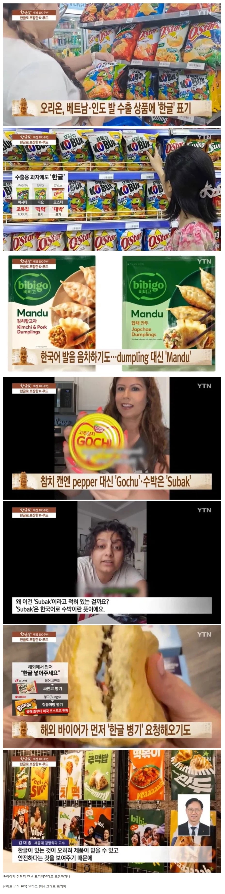

수출용 한국식품에 한글 그대로 표기
댓글
인지도 낮을때나 저래야지
이제 위상이 좀 올라오긴했나봐
수출 제품은 수출하는 국가 법령에 맞도록 표기해야함.
이것도 다 BTS가 이룬 업적임. 한국인들은 감사해야지

예전 90년대만해도 일본어로 써진 제품이 신뢰성이 있어서 그대로 가져왔는데
이제 한국어도 그런 신뢰성을 담보하는 제품이 되었구나
ㄷ ㄷ 이렇게 생각하니까 바로 이해된다
예전엔 일본수출품(일본어로 적혀진 한국제품)도 일부러 국내에서 같은 포장으로 판매하거나
일본제품 라벨질 안하고 그냥 판매했음, 특히 문구점에서 그런걸 주로 볼수 있었는데 90년대워크맨 시절이라
당시에는 일제 == 신뢰성 대명사였음. 지금도 동남아제품들 가끔 일본수출품인데 라벨질 안하고 파는게
그런 신뢰성을 내포하기 위해서라는 간접적이느낌
한국 제품도 자체 신뢰성은 있었는데 그동안은 문화적인 레벨이 좀 낮아서 그렇게는 안했는데
2012년 이후부터 동남아에서는 한국라벨질이 신뢰를 보증하더니
코로나 이후 한국제조업이 부각되면서(특히 화장품) 다른 나라들도 한국라벨 그대로 파는듯
일본어로 쓰여진 제품 또는 독일 국기 마크 혹은 made in german
무조건 신뢰였음
드디어.. 문화의 힘의 정점은 언어인데 우리 말이 세계에 널리 퍼지는구나
김구 선생님 기절
김구 무발기 100회 연속사정 헤으응구
기무치에는 발작했는데, 이게 맞나 싶어요.
그런데 기무치도 일본애들이 김치를 발음 못해서 억지로 짜낸 발음이 기무치 인거 아닌가?
중국산 짭 방지
한국 들어온 중국과자 빵들 다 한글임 ㅋㅋㅋㅋ
가격이 싸거나 마라같은거 들어갔거나하는거보고 뒷면보면 중국꺼라 구분하기 힘듦.
이름도 한국식으로 바꿔서
옛날사람들 일제 독일제 물건 사는거랑 비슷한 느낌인가보네 일본어나 독일어 원문 그대로 적혀있는거 튼튼하다고 사는 느낌
저런건 어딜가나 흔하게 있을꺼같은데
우리나라도 찹쌀떡을 모찌로 내는경우 많으니
그러면 이제 중국에서도 표지에 한글박아서 수출할거같은데 ㅋㅋ
이미 하고 있음ㅋㅋㅋ 특히 동남아에서
캬 ㅋㅋㅋㅋ
마트 통째로 짭퉁 컨셉인 곳들 있더라
약간 "더잇소" 이런식으로
고추 참치 고추참치~ 참치 참치 고추참치
한국 제품 아닌데 한국어로 쓰는 새끼들 생김
두부 토푸좀 바꼈으면 토푸 먼가 그지같어
따후를 드리겠습니다
온천달걀을 온센타마고라고 하니까
이젠 김구선생도 지겨울듯 ㅋㅋㅋ

드디어
대만애들은 불쌍
아무리 문화적으로 신뢰를 줘도
중국어 써있으면 사람들이 거름
고추참치는 거의 제품명이니까 그렇다치는데 수박은 왜ㅋㅋㅋㅋ
일본도 요즘은 한글 그대로 가져와서 뒤에 성분표만 스티커처리 하는거 많음ㅋ